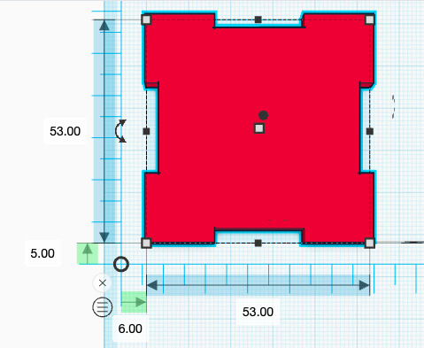
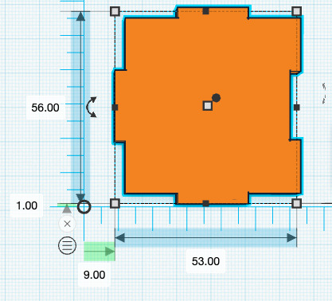

--Introducción--
Para el segundo proyecto se tuvo que cortar con laser un cubo (5x5x5) de material MDF (3 mm). Los cubos se hacen con dos tipos diferentes de caras, 2 tapas (para la parte de arriba y la de abajo) y 4 lados (para los lados).
La intención era que los alumnos entendieran como usar la cortadora laser, entender sobre materiales y comprar el equipo necesario para poder usar el laboratorio de mecánica.
Todo lo que se compró para este proyecto fue:
- Overol
- Botas de Ingeniero (Piel, con casquillo)
- Guantes de Protección
- Lentes de Protección
- Madera MDF (para hacer los cubos)
--Diseño--
Antes de cortar el cubo, se tuvo que diseñar dicho cubo en línea, para eso se volvió a usar Tinkercard. El diseño que se llevo a cabo fue el siguiente:
--Problema--
El diseño original se hizo en clase (paso a paso) con ayuda del profesor Huber Giron. Lamentablemente este disñeo no funciono pues no tenía en cuenta los 3 mm del material, lo que ocasionó que al cortar el cubo, este no ensamblara correctamente.Para solucionar este problema se tuvo que cambiar un poco las dimensiones de cada cara. Las tapas terminaron teniendo una medida de 53x53, mientras que los lados terminaron teniendo una medida de 53x56.
El diseño final de las tapas es:
El diseño final de los lados es:
